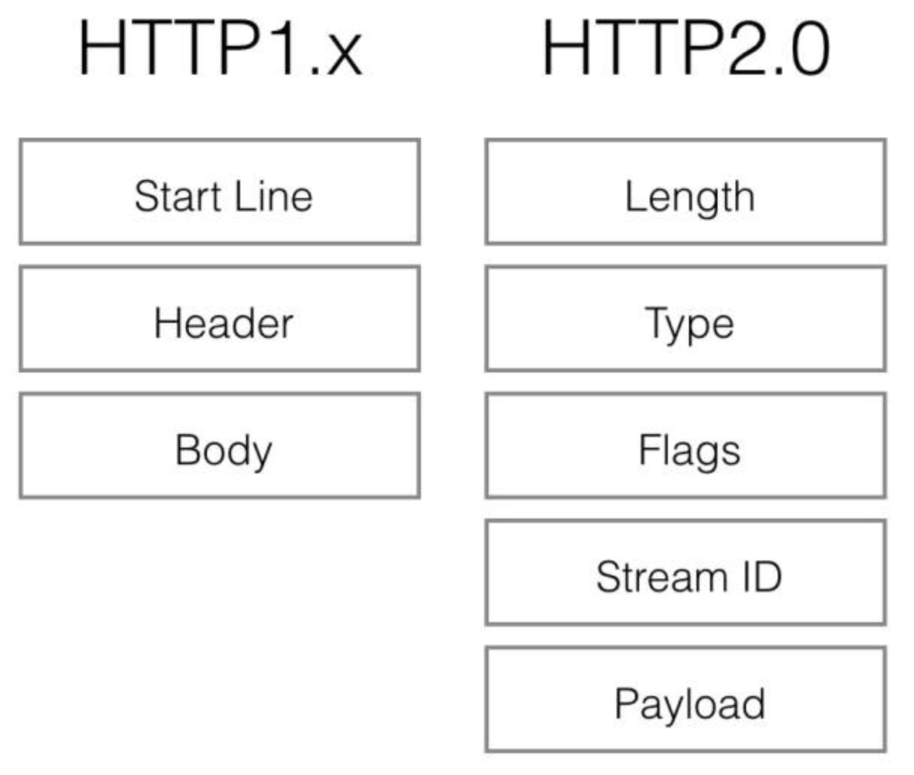

HTTP/2
超文本传输协议(HTTP)是一种非常成功的协议。但是HTTP/1.1 使用底层传输的方式中的特性对今天的应用程序性能有很大的负面影响。HTTP/1.1 添加了请求流水线操作(request pipelining)以及持久连接的支持也只能缓解部分请求并发性问题，并且仍然受到队首阻塞的影响，此外HTTP 头字段通常是重复且冗长的，导致不必要的网络流量以及导致初始 TCP 拥塞窗口被快速的填满， 这些问题都催促着尽快出现一个更新、更好的HTTP版本。
HTTP/2概述
HTTP/2主要来源于Google开发的SPDY协议，IETF对其进行了标准化，从而产出了HTTP/2。
HTTP/2没有改变HTTP的语义、请求方法、状态码等规划，向下兼容，对业务层的逻辑不产生影响。 HTTP/2主要改变的是传输方式，由之前的文本改为二进制消息帧来更有效地处理消息，这让HTTP请求的分块传输、多路复用等得以实现，除此头部压缩、服务器推送等措施也引入用来减少网络延迟，提高客户端的页面加载速度。

HTTP/2 关键特性解说
iframe
HTTP/2 是一个彻彻底底的二进制协议，头信息和数据包体都是二进制的，统称为“帧”。对比 HTTP/1.1 ，在 HTTP/1.1 中，头信息是文本编码(ASCII编码)，数据包体可以是二进制也可以是文本。使用二进制作为协议实现方式的好处，更加灵活。在 HTTP/2 中定义了 10 种不同类型的帧, 每种帧类型都有不同的用途。例如，HEADERS 和 DATA 帧构成了 HTTP 请求和响应的基础(第 8.1 节)；其他帧类型(如 SETTINGS，WINDOW_UPDATE 和 PUSH_PROMISE)用于支持其他 HTTP/2 功能。
http2.0用binary格式定义了一个一个的frame，和http1.x的格式对比如下图：
图：HTTP格式对比
stream
由于 HTTP/2 的数据包是乱序发送的，因此在同一个连接里会收到不同请求的 response。不同的数据包携带了不同的标记，用来标识它属于哪个 response。
HTTP/2 把每个 request 和 response 的数据包称为一个数据流(stream)。每个数据流都有自己全局唯一的编号。每个数据包在传输过程中都需要标记它属于哪个数据流 ID。规定，客户端发出的数据流，ID 一律为奇数，服务器发出的，ID 为偶数。
数据流在发送中的任意时刻，客户端和服务器都可以发送信号(RST_STREAM 帧)，取消这个数据流。HTTP/1.1 中想要取消数据流的唯一方法，就是关闭 TCP 连接。而 HTTP/2 可以取消某一次请求，同时保证 TCP 连接还打开着，可以被其他请求使用。
http/2要解决的一大难题就是多路复用（MultiPlexing），也可称之为连接共享。上面协议解析中提到的stream id就是用作多路复用机制的。一个request对应一个stream并分配一个id，这样一个连接上可以有多个stream，每个stream的frame可以随机的混杂在一起，接收方可以根据stream id将frame再归属到各自不同的request里面。
图：HTTP格式对比

首部压缩
HTTP每次请求或响应都会携带首部信息用于描述资源属性。HTTP/1.1使用文本的形式传输消息头，消息头中携带cookie每次都需要重复传输几百到几千的字节，这十分占用资源。
HTTP/2使用了HPACK算法来压缩头字段，这种压缩格式对传输的头字段进行编码，减少了头字段的大小。同时，在两端维护了索引表，用于记录出现过的头字段，后面在传输过程中就可以传输已经记录过的头字段的索引号，对端收到数据后就可以通过索引号找到对应的值。
前面讲过tcp有slow start的特性，三次握手之后开始发送tcp segment，第一次能发送的没有被ack的segment数量是由initial tcp window大小决定的。这个initial tcp window根据平台的实现会有差异，但一般是2个segment或者是4k的大小（一个segment大概是1500个字节），也就是说当你发送的包大小超过这个值的时候，要等前面的包被ack之后才能发送后续的包，显然这种情况下延迟更高。http的header现在膨胀到有可能会超过这个intial window的值了，所以更显得压缩header的重要性。
头部压缩大概可能有 95% 左右的提升，HTTP/1.1 统计的平均响应头大小有 500 个字节左右，而 HTTP/2 的平均响应头大小只有 20 多个字节，提升比较大。
Server Push
Server Push 允许网站主动推送页面所需的资源，而不是被动等待。但实际上很难以此实现性能提升，所以用这个特性的人并不多，该特性现在已经逐渐在HTTP/2实现中取消。 Chrome的开发团队也表示 Chrome 106 和之后的版本将默认禁用 HTTP/2 Server Push 特性
HTTP/2 Server Push 的替代品是103 Early Hints，它有很多与 Push 相同的优点。与服务端推送资源不同，103 Early Hints 只向浏览器发送可能会立即请求的资源提示，并将请求资源的控制权交给浏览器。 关于103 Early Hints的详细解析将在后续篇章讲解。
HTTP/1.1 VS HTTP/2
查看 HTTP/1.1 与HTTP/2的速度对比 https://http2.akamai.com/demo